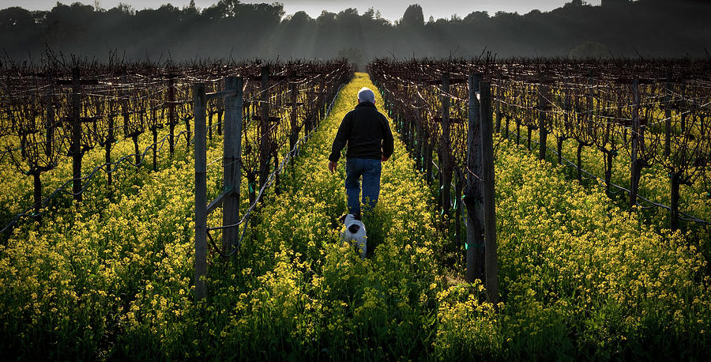

"A tree is known by its fruit, a man by his deeds. A good deed is never lost, he who sows courtesy reaps friendship, and he who plants kindness gathers love."
~ St. Basil"A tree is known by its fruit, a man by his deeds. A good deed is never lost, he who sows courtesy reaps friendship, and he who plants kindness gathers love."
~ St. Basil


Hey I’m Antonio, a young developer who practically eats code for breakfast on a daily basis. I specialize in web development and pride myself on having cultivated a very efficient tool set (HTML, CSS, JS, Python, Lua) along with a couple of frameworks (Node, Django) which have allowed me to engineer exciting projects. I also love working with SQL and any server that runs on a GNU/Linux machine using Apache or Nginx.
I’m also a guy who loves coding and software. Actually, it’s gotten to the point where I see it in my sleep often (which is freaky, but hey, it is what it is). Both have been apart of my life for as long as I remember, with my most vivid memories of the early 2000s being tinkering on a Windows ME PC and playing DOS games via the command line at school.
Later as I grew in age and the internet started to become more accessible I dove into it all even further. The net provided me with a plethora of information that not only changed the way I saw the world but also allowed me to finally modify the digital realm I had grown up in.
And as the 2000s made way for the 2010s, this manifested in my writing of simple scripts for some of my favorite games (Minecraft primarily) and installing Crunchbang Linux on a old T60 to further my teenage rebellion against all things proprietary and ‘mainstream’. The computer became my home and the internet my playground, with an array of software available on my finger tips aiding me at every turn.
Eventually this all came to a head when I decided, after coming out of a particularly boring humanities course one morning, why not make software my profession? I always loved the digital world and knew its nooks and crannies like the back of my hand, and I already sort-of knew how to program, albeit at a very basic level. Why not take that love to the next level? And so then and there I decided to take the plunge, and today here I am, a full-stack developer who is even more in love with the digital and always pleasantly surprised when finding something new to learn.
When I’m not coding you can find me reading yet another philosophical or theological work, making some brand-new Mediterranean dish, or just meditating on the amazing world around us.